Carto is a cloud-based mapping application that makes it easy to produce interactive, online maps. These maps can include animations of data over time. It is also a geospatial database, allowing you to process geodata using Structured Query Language.
Download from here, unzip the folder and place on your desktop. It contains the following:
oregon_dams.csv Data on dams in Oregon, from the state’s dams inventory. Contains fields including hazard (High, Significant, or Low) , and storage, giving the each dam’s capacity in acre feet.
seismic_risk.zip Data on seismic risk for the contiguous US, calculated by the US Geological Survey. The risk values are in the field acc_val, and represent the peak ground acceleration, expressed as a percentage of the acceleration due to gravity, likely to be experienced with a 2% chance over 50 years. This data is a zipped shapefile, a common format for geographic data. Broadly speaking, a shapefile contains a table of data, which is associated with map geometries that can be polygons, lines, or points.
We will also later import data from the USGS earthquakes API, for earthquakes since 1960 with a magitude of 5 and above, within a 2,000km radius of the geographic center of Oregon, using this url:
http://earthquake.usgs.gov/fdsnws/event/1/query?starttime=1960-01-01T00:00:00&latitude=43.9336&longitude=-120.5583&maxradiuskm=2000&minmagnitude=5&format=csv&orderby=time
We are going to make a map with three layers:
Login to your Carto account, open the drop-down menu under Maps at top left and switch to Your datasets:
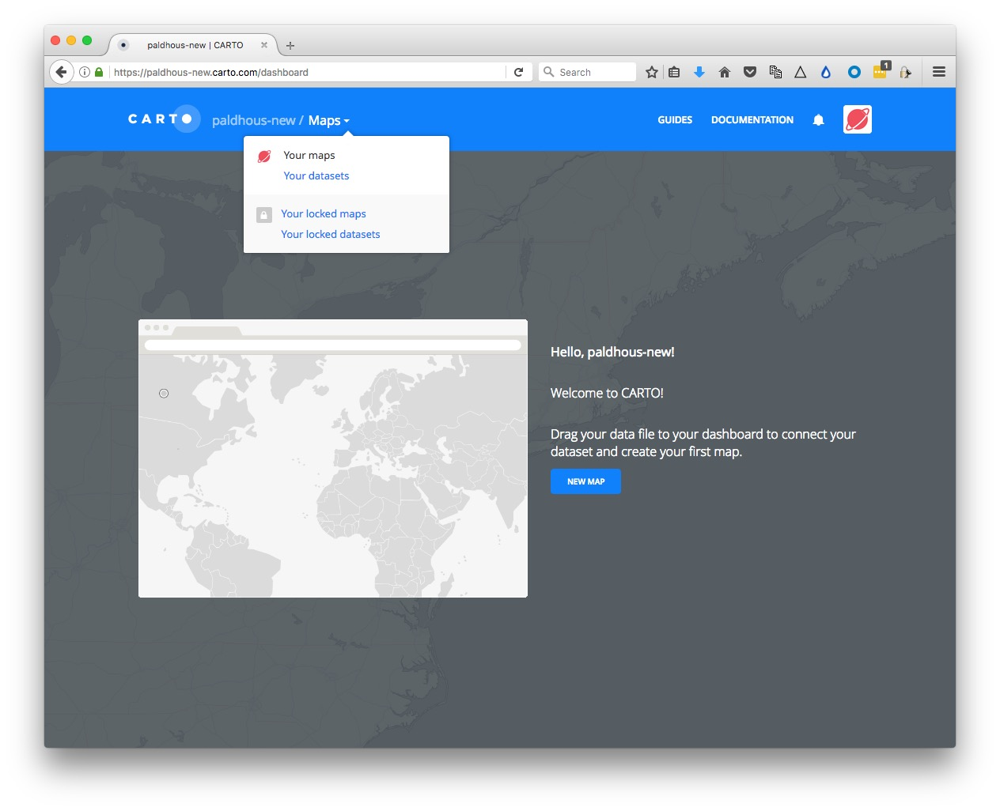
Then click the NEW DATASET button at top right.
You should now see the following screen:
With the Data file tab selected, click the Browse button, navigate to the zipped siesmic_risks.zip shapefile and click Open. Then click the CONNECT DATASET button at bottom right.
Carto can import geodata in a variety of formats, including CSV, KML, GeoJSON as well as shapefiles.
Once the data has imported, you will see the uploaded data table:
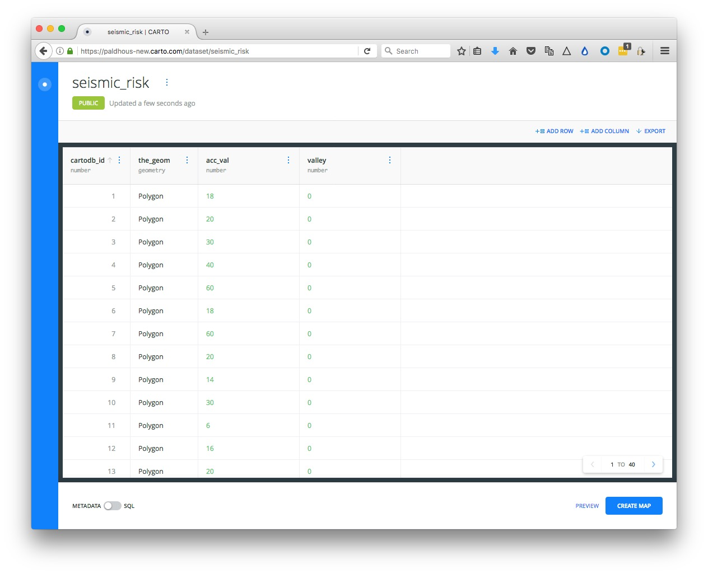
Notice that, in addition to the fields from the original data, each row has been given a cartodb_id, which is a unique identifier for each. The table also has a field called the_geom. This field is central to how Carto works, defining the geometry of any map you make. These geometries can be points, lines or polygons (areas) — which is what we have here.
You can rename fields by clicking on the three little blue dots to the right of their names:

You can sort or order the table by the data in each field by clicking on the blue dots and then using the arrows. And you can change the data type for each field (for example from numbers to strings of text), using the same menu.
Click PREVIEW at bottom right to see the basic, unstyled map:

Now click BACK to close that map and click on the circle at top left to return to your datasets:

Notice that the top menu has a link to DOCUMENTATION, which has links to Cato’s technical manuals.

The DATA LIBRARY link contains useful datasets that you can import into your own account. We are going to use this to import a map of US states, which we will then use in a SQL query to clips the seismic risk map to the boundaries of Oregon.
Click the data DATA LIBRARY link, then SEARCH for “states.” Scroll down, navigate to page 2 of the search returns, select the dataset USA states and click the Connect dataset link at top right.
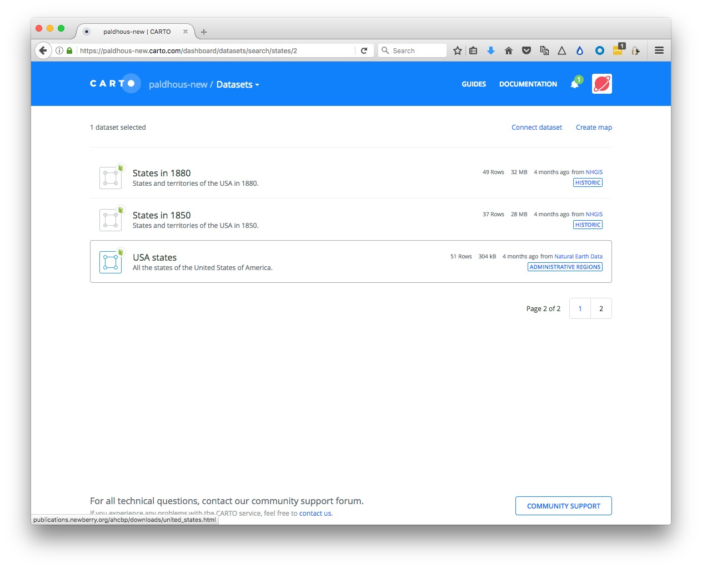
Notice that the imported dataset contains a field called postal with the states’ two-letter abbreviations:

Now slide the toggle at bottom right from METADATA to SQL:

This should open the following panel

Notice that there is a default query that is simply selecting all the data from the table:
SELECT * FROM ne_50m_admin_1_states
CartoDB is based on a PostgreSQL database. It works similarly to SQLite, although the syntax for some queries is a little different. Here is a PostgreSQL tutorial, if you would like to learn more.
Paste the following query into the SQL panel and click APPLY:
SELECT *
FROM ne_50m_admin_1_states
WHERE postal = 'OR'
You should now just have one row in your data representing the state of Oregon. You can click Preview to confirm this on a map if you wish.
Click the three blue dots to the right of the table name and Create Dataset from query:
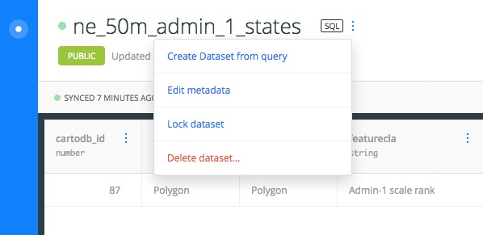
Click on the new table’s title and rename as oregon:

Toggle to the SQL panel again, and paste in this query in place of the default:
SELECT seismic_risk.acc_val, ST_Intersection(seismic_risk.the_geom, oregon.the_geom) AS the_geom
FROM seismic_risk, oregon
WHERE ST_Intersects(seismic_risk.the_geom, oregon.the_geom)
Carto allows you you run spatial/grographic queries using an extension to PostgreSQL called PostGIS. PostGIS functions can, for instance, calculate distances or areas, and all begin with the prefix ST_. See here for a full list of PostGIS special functions.
This query uses the spatial functions ST_Intersection, which creates a new geometry that is the overlap between the geometries from two tables, and ST_Intersects, which returns data only for overlaps between two geometries.
Here, the SELECT clause will return two columns, acc_val from the seismic_risk table, and a new the_geom, which is the part of the seismic_risk.the_geom that overlaps with the oregon.the_geom.
The FROM clause must name both tables included in the query.
The WHERE clause ensures that the data returned is only for the overlap between the two geometries.
Click APPLY to run the query, then create a new dataset from the result, and rename as oregon_seismic:

The map PREVIEW should look like this:
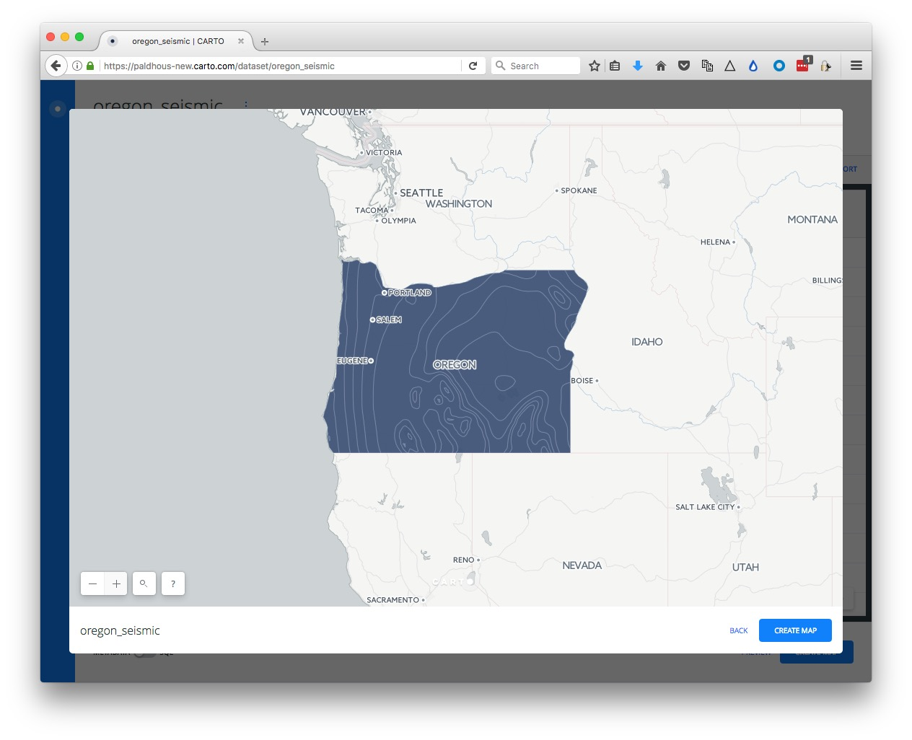
Now return to your DATASETS, click the NEW DATASET button again and import the file oregon_dams.csv, which should look like this:

Notice that the_geom for points is given by their longitude and latitude co-ordinates.
Click PREVIEW to see the locations of all of the dams:
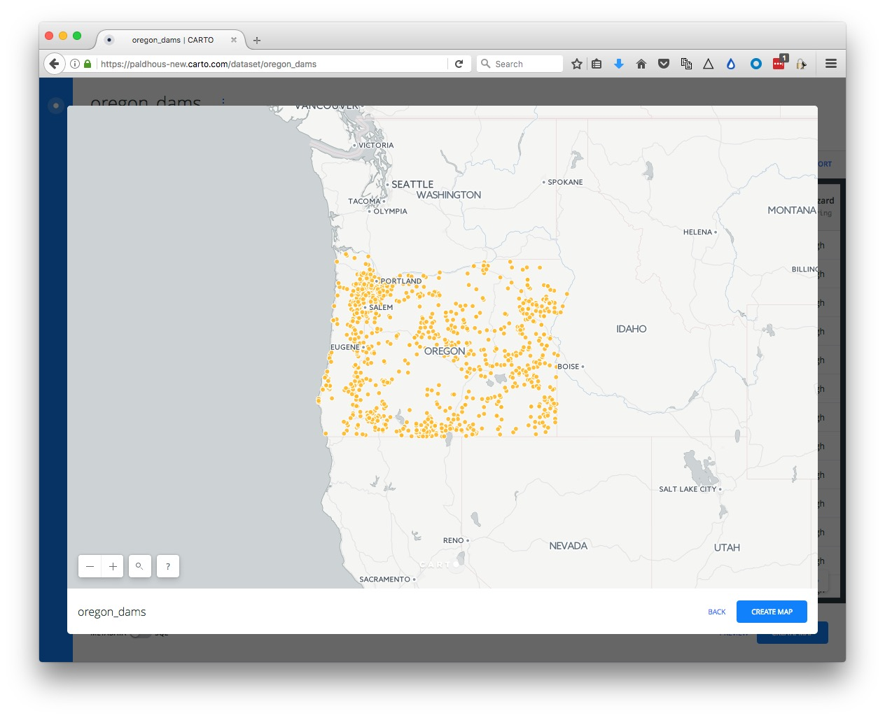
We will create a new column in this data to allow us to accurately scale the size of the dams by their storage in acre feet. Click on the three little dots to the right of the header on any of the columns and Add new column.

Rename the new column as scale and change its data type to Number:

Now open the SQL panel with the toggle switch and run this query:
UPDATE oregon_dams
SET scale = sqrt(storage)
This is an UDPATE query, which alters a table, rather than selecting data from one or more tables.
The scale field should now be populated with numbers:

We have created this field, because Carto only allows you to set the size of circles by their width, not their area. To scale accurately by area, you need to use the square root of the data values, because the area of a circle is propotional to its radius squared, according to the equation π*r^2.
Now we will run a query to select only the dams judged to be a High or Significant hazard in zones with a seismic hazard acc_value of greater than 40.
SELECT oregon_dams.*
FROM oregon_dams, oregon_seismic
WHERE ST_Within(oregon_dams.the_geom, oregon_seismic.the_geom) AND oregon_seismic.acc_val >= 40 AND (oregon_dams.hazard = 'High' OR oregon_dams.hazard='Significant')
This query uses the spatial function ST_Within, which returns data only if the first geometry is inside the second. The meaning of rest of the WHERE clause should make sense from our earlier SQL class.
APPLY this query, then create a new dataset from the result, and rename as oregon_dams_hazard. In PREVIEW, this dataset should look like this:

Finally, we will pull in the historical earthquakes data.
Return to your DATASETS, click NEW DATASET and enter the following into the url.
http://earthquake.usgs.gov/fdsnws/event/1/query?starttime=1960-01-01T00:00:00&latitude=43.9336&longitude=-120.5583&maxradiuskm=2000&minmagnitude=5&format=csv&orderby=time
Click SUBMIT and you should see the following screen:

With tables like this, pulled from an live API, it is possible to have them update automatically on a defined schedule, with a paid-for account, hence the invitation to upgrade.
However, we will simply CONNECT DATASET, which should look like this:

Rename this dataset to quakes.
Exit the quakes dataset and reopen the oregon_seismic dataset by clicking on its name in your DATASETS. Then click the CREATE MAP button at bottom right.
If this is your first time using the news Carto Builder interface, you will be aksed if you want to TAKE A TOUR. Instead click EDIT YOUR MAP.
Rename this map Oregon dams and seismic hazards by clicking on its name at top left:

Now clickon the ADD button. Select the oregon_dams_hazard layer so that it is highlighted in blue, then click the ADD LAYER button at bottom right.
You should now see both layers on the same map:
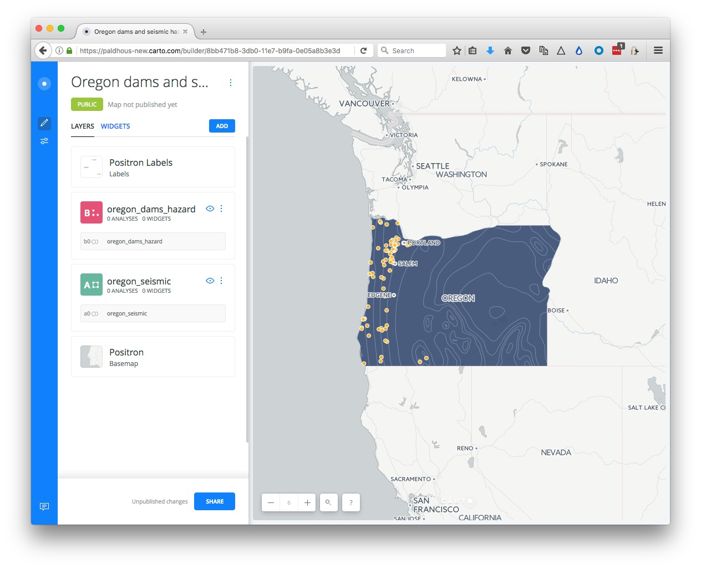
Now choose a basemap for your visualization, by clicking the Basemap layer in the left panel. The default is a basemap from Carto called Positron, with the Labels displayed over the data layers.
This is a good default choice. Take a few minutes to explore the built-in basemap options using the Source and Style options. You are not limited to these basemaps, however.
To import another tiled basemap from elsewhere on the web, click this icon under Source:

Now click the blue plus sign under Style to call up the following dialog box:
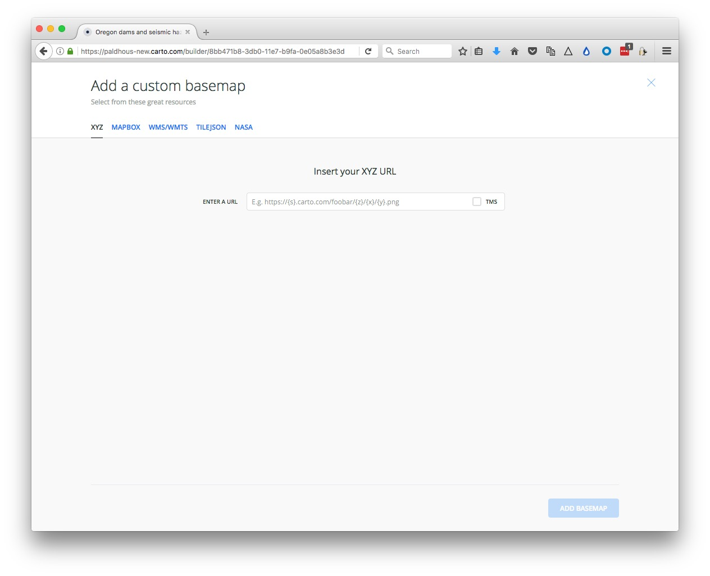
The XYZ tab allows you to call in publicly available basemaps using URLs in the following format:
https://{s}.tiles.mapbox.com/v3/mapbox.world-bright/{z}/{x}/{y}.png
We will use this “world bright” basemap, provided by MapBox (see the other basemaps from MapBox here). The Leaflet Providers preview is a good place to look for available basemaps from other providers. It previews the maps and also exposes their XYZ URLs:

Back in Carto, enter the XYZ URL for the MapBox world bright map, above, and click Add basemap. The map should now look like this:

You can also replace the basemap with a white or colored background by clicking on the paint-pot icon under Source:

Return to the main layers panel by clicking on the backward-pointing arrow next to Basemap.
Now click on the oregon_seismic layer to bring up this view:

At this point, rename the layer Seismic risk.
Click on STYLE, then the color bar for FILL. Then select BY VALUE and select the acc_val field to color the map by the values for seismic risk:

The default options divide the data into 5 buckets, or bins, using quantiles. You can explore other options by clicking the three blue dots next to each. You can also select from a range of color palettes, and add labels to your map if desired by checking that box. Click on Custom color set if you wish to set the colors for each bin individually, for instance to use a ColorBrewer palette.
Return to the main layers panel, click on the oregon_dams_hazard layer, and rename to Hazardous dams.
In the STYLE tab, retain the default aggregation of NONE, and click on the color bar for FILL, then BY VALUE. Select type and the points should be colored using a default qualitative color scheme:

Click on the color bar for FILL, and then the individual color bars to edit the colors used. Here I have selected a HEX value of #0000FF to make each dam rated as a Significant hazard blue, and #FF8000 to make each dam rate High hazard orange:

(The different aggregation options allow you to create other map types from a points layer, including animations. We will explore these options in the workshop, as time allows.)
To exert finer control over the map styling, we can use CartoCSS, which styles maps in much the same way that conventional CSS styles web pages. See here for a CartoCSS reference.
Still in the Hazardous dams layer, slide the VALUES/CARTOCSS toggle at bottom-left to CARTOCSS
You should see the following code:
#layer {
marker-width: 7;
marker-fill: ramp([hazard], (#0000ff, #ff8000), ("Significant", "High"), "=");
marker-fill-opacity: 1;
marker-allow-overlap: true;
marker-line-width: 1;
marker-line-color: #FFF;
marker-line-opacity: 1;
}
Edit to the following
#layer {
marker-width: [scale]/7;
marker-fill: ramp([hazard], (#0000ff, #ff8000), ("Significant", "High"), "=");
marker-fill-opacity: 0.5;
marker-allow-overlap: true;
marker-line-width: 1;
marker-line-color: #FFF;
marker-line-opacity: 1;
}
Rather than making the circles making the dam a fixed size, this code scales them by the field scale we made earlier, so that they are scaled by area according to their storage capacity — or the amount of water that could be released if they failed catastrophically. I divided all those values by 7, so that the largest circle does not completely dominate the map.
Click APPLY and the map should redraw:
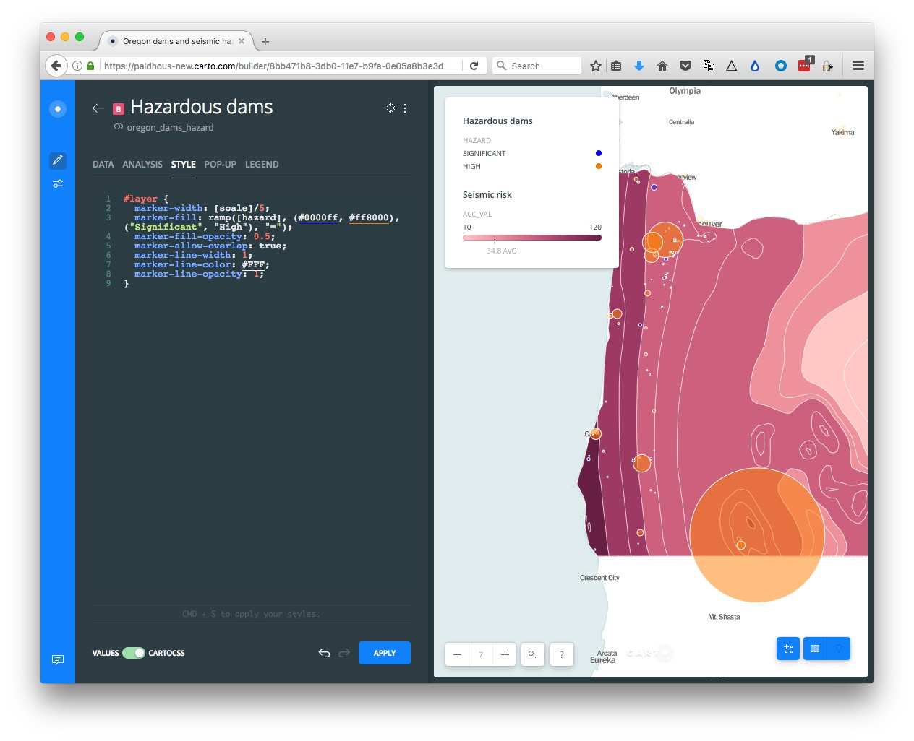
Select the LEGEND tab for the Hazardous dams layer, edit the TITLE to Scaled by storage capacity.
Switch to the Seismic risk layer, select the LEGEND tab, uncheck the TITLE, and edit the LEFT LABEL and RIGHT LABEL to Low and High respectively.

Switch to the Hazardous dams layer and select the POP-UP tab. Select Hover and the LIGHT style, and check dam_name, edting the text to Name.
When you hover over one of the facilities, the map should now look like this:

Return to the layers panel and click ADD, selecting the quakes layer. Select this layer,and under the STYLE tab change the aggregation to ANIMATED by clicking this icon:

Change the FILL color to black (Hex: #000000) and the COLUMN to time
The quakes layer should now be animated.
Return to the main layers panel.
We are almost ready to publish the map, but before doing so, click the Settings icon at left:

Experiment with the options. Here the SEARCH BOX, which geocodes locations entered by the user and zooms to them is disabled.
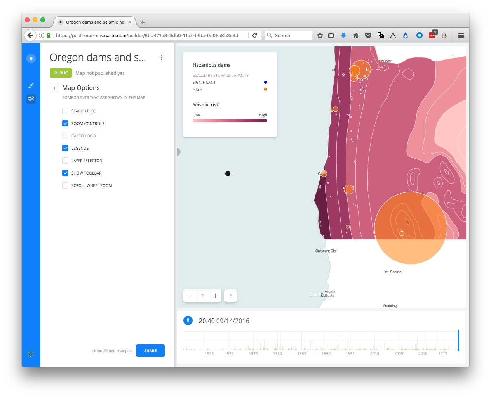
I strongly recommend disabling the SCROLL WHEEL ZOOM which will otherwise cause the map to zoom unintentionally when someone scrolls down a web page in which the map is embedded.
Having finished working on the map, click the SHARE button. This will call up the following options:
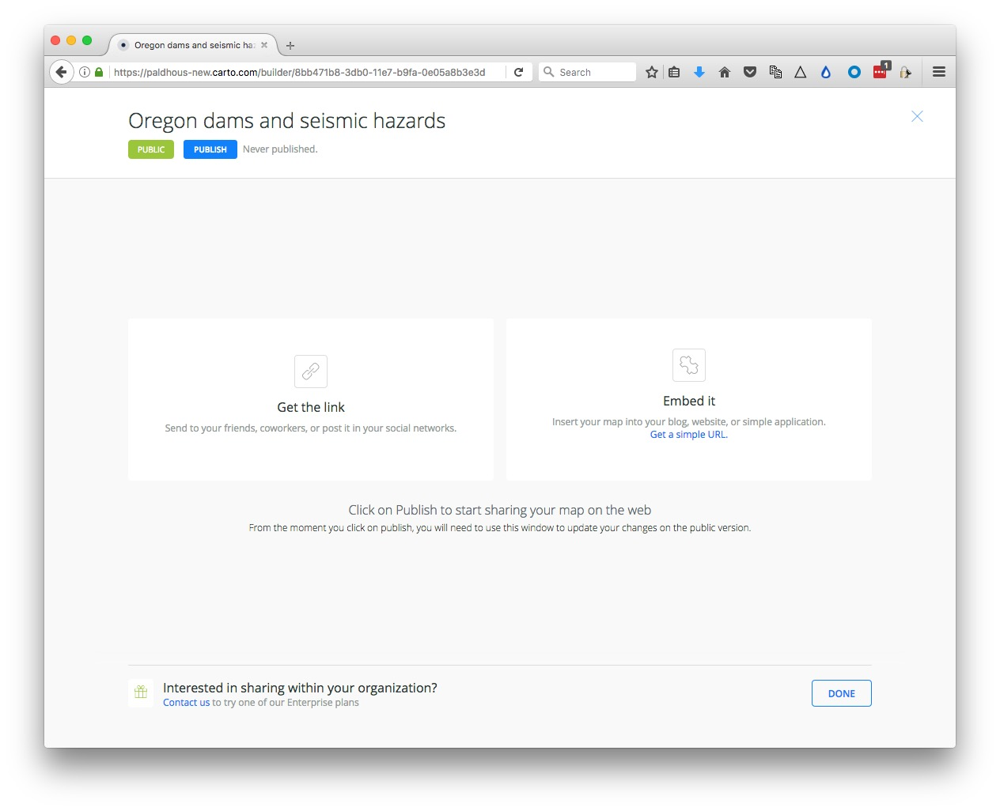
Click PUBLISH, than copy the code the code from Embed it to obtain an iframe which will allow you to embed the map on any web page, in the following format:
<iframe width="100%" height="520" frameborder="0" src="https://paldhous-new.carto.com/builder/8bb471b8-3db0-11e7-b9fa-0e05a8b3e3d7/embed" allowfullscreen webkitallowfullscreen mozallowfullscreen oallowfullscreen msallowfullscreen></iframe>
(Note that you can edit the dimensions of the iframe — here set at 100% of the width of the div in which it appears — and 520 pixels high) as required.)
The Map Academy
A series of exercies in Carto, organized by difficulty.